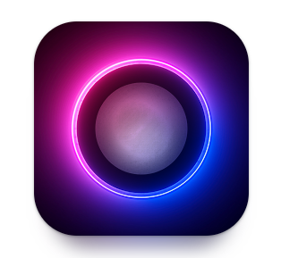

一、說明
一般要量測光合有效照度(PPFD)需要專業的光譜儀，但隨便一個光譜儀都是上萬起跳不是一般人可以輕易負擔的
這裡介紹一個APP，它可以透過手機鏡頭或照度計測量亮度(LEX)，在透過內部的數據庫轉換成光合有效照度(PPFD)，即可以低成本得知大概的PPFD值
配合照度計可以大幅提升量測的精準度，配合照度計型號: UT383BT
二、PPFD&DLI測量+調整方法
1.Google play下載: PPFD Meter - Grow Light Meter

2.安裝完成後打開APP，打開後如下圖
1.教學介面
2.感測器設定: 如使用照度計測量的須先到這裡設定
3.LUX量測
4.PPFD&DLI量測
3.點擊"PPFD&DLI"選項，點擊後如下圖
1.設定
4.點擊(1)"設定"，點擊後如圖
1.植物燈種類
白光LED選: 6500K+%10 660nm
黃光LED選: 3000K+%10 660nm
太陽光LED選: 4000K+%10 660nm
2.每日照光時間
參考「各植物光照條件對照表」，並依最大值設定
EX:推薦光照時間為12-16小時的話，先設16小時
3.PPFD&DLI上下限
參考「各植物光照條件對照表」
5.按手機的上一頁，回到PPFD&DLI測量頁面，並將手機/照度計置於測量位置
1.目前PPFD數值
如數值超過上限，調遠植物燈與植物的距離(把燈調暗)
如數值低於下限，調近植物燈與植物的距離(把燈調亮)
2.目前DLI數值
調整完PPFD值後如果DLI還是超過上限，請到"設定"介面將"每日照光時間"降低，直到範圍內，之後植物燈就照著設定的值開燈